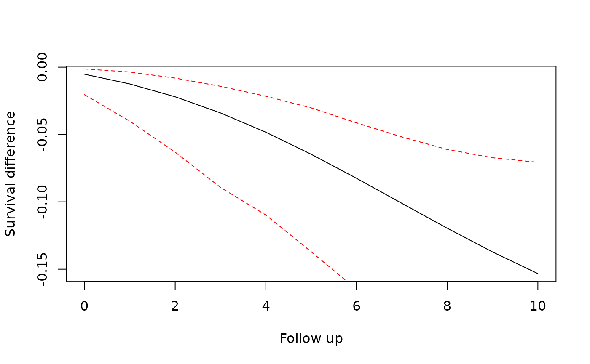

To improve usability, we have implemented a new user interface. This allows a more structured specification of the target trial emulation process.
It also gives flexibility to add new methods and tools for parts of
the analysis. For example, we now allow different ways of storing the
expanded data: as CSV files and in a DuckDB database. We also allow
different weight fitting model procedures: using stats::glm
or parglm::parglm. New components can quickly and easily be
specified for use with this package.
User Interface
A sequence of target trials analysis starts by specifying which estimand will be used:
trial_pp <- trial_sequence(estimand = "PP") # Per-protocol
trial_itt <- trial_sequence(estimand = "ITT") # Intention-to-treatAdditionally it is useful to create a directory to save files for later inspection.
trial_pp_dir <- file.path(tempdir(), "trial_pp")
dir.create(trial_pp_dir)
trial_itt_dir <- file.path(tempdir(), "trial_itt")
dir.create(trial_itt_dir)Data
Next the user must specify the data that will be used. Here we need to specify which columns contain which values and how they should be used.
data("data_censored")
trial_pp <- trial_pp |>
set_data(
data = data_censored,
id = "id",
period = "period",
treatment = "treatment",
outcome = "outcome",
eligible = "eligible"
)
# Function style without pipes
trial_itt <- set_data(
trial_itt,
data = data_censored,
id = "id",
period = "period",
treatment = "treatment",
outcome = "outcome",
eligible = "eligible"
)We can inspect our object by printing:
trial_itt
#> Trial Sequence Object
#> Estimand: Intention-to-treat
#> Data
#> N: 725 observations from 89 patients
#> id period treatment x1 x2 x3 x4 age age_s
#> <int> <int> <num> <num> <num> <int> <num> <num> <num>
#> 1: 1 0 1 1 1.146148362 0 0.7342030 36 0.08333333
#> 2: 1 1 1 1 0.002200337 0 0.7342030 37 0.16666667
#> ---
#> 724: 99 6 1 1 -0.033762356 1 0.5752681 71 3.00000000
#> 725: 99 7 0 0 -1.340496520 1 0.5752681 72 3.08333333
#> outcome censored eligible time_of_event first am_1 cumA switch
#> <num> <int> <num> <num> <lgcl> <num> <num> <num>
#> 1: 0 0 1 9999 TRUE 0 1 0
#> 2: 0 0 0 9999 FALSE 1 2 0
#> ---
#> 724: 0 0 0 7 FALSE 1 4 0
#> 725: 1 0 0 7 FALSE 1 4 1
#> regime_start time_on_regime eligible0 eligible1
#> <int> <num> <num> <num>
#> 1: 0 0 1 0
#> 2: 0 1 0 1
#> ---
#> 724: 5 1 0 1
#> 725: 7 2 0 1
#>
#> IPW for informative censoring:
#> - No weight model specified
#>
#> No expanded data, use expand_trials()
#>
#> Outcome model:
#> - Outcome model not specified. Use set_outcome_model()
#> No outcome data, use load_expanded_data()Weight Models
To adjust for the effects of informative censoring, inverse probability of censoring weights (IPCW) can be applied. To estimate these weights, we construct survival models. Two sets of models are fit for the two censoring mechanisms which may apply: censoring due to deviation from assigned treatment, and other informative censoring.
Censoring due to treatment switching
We specify model formulas to be used for calculating the probability
of receiving treatment in the current period. Separate models are fitted
for patients who had treatment = 1 and those who had
treatment = 0 in the previous period. Stabilized weights
are used by fitting numerator and denominator models.
There are optional arguments to specify columns which can include/exclude observations from the treatment models. These are used in case it is not possible for a patient to deviate from a certain treatment assignment in that period.
trial_pp <- trial_pp |>
set_switch_weight_model(
numerator = ~age,
denominator = ~ age + x1 + x3,
model_fitter = stats_glm_logit(save_path = file.path(trial_pp_dir, "switch_models"))
)
trial_pp
#> Trial Sequence Object
#> Estimand: Per-protocol
#> Data
#> N: 321 observations from 89 patients
#> id period treatment x1 x2 x3 x4 age age_s
#> <int> <int> <num> <num> <num> <int> <num> <num> <num>
#> 1: 1 0 1 1 1.146148362 0 0.7342030 36 0.08333333
#> 2: 1 1 1 1 0.002200337 0 0.7342030 37 0.16666667
#> ---
#> 320: 99 1 1 0 -1.106480738 1 0.5752681 66 2.58333333
#> 321: 99 2 0 0 1.650478074 1 0.5752681 67 2.66666667
#> outcome censored eligible time_of_event first am_1 cumA switch
#> <num> <int> <num> <num> <lgcl> <num> <num> <num>
#> 1: 0 0 1 9999 TRUE 0 1 0
#> 2: 0 0 0 9999 FALSE 1 2 0
#> ---
#> 320: 0 0 0 7 FALSE 1 2 0
#> 321: 0 0 0 7 FALSE 1 2 1
#> regime_start time_on_regime eligible0 eligible1
#> <int> <num> <num> <num>
#> 1: 0 0 1 0
#> 2: 0 1 0 1
#> ---
#> 320: 0 1 0 1
#> 321: 2 2 0 1
#>
#> IPW for informative censoring:
#> - No weight model specified
#>
#> IPW for treatment switch censoring:
#> - Numerator formula: treatment ~ age
#> - Denominator formula: treatment ~ age + x1 + x3
#> Model fitter type: te_stats_glm_logit
#> Weight models not fitted
#>
#> No expanded data, use expand_trials()
#>
#> Outcome model:
#> - Outcome model not specified. Use set_outcome_model()
#> No outcome data, use load_expanded_data()This type of censoring is not used with an ITT estimand, so we cannot
use set_switch_weight_model() with trial_ITT
objects.
Other informative censoring
In case there is other informative censoring occurring in the data,
we can create similar models to estimate the IPCW. These can be used
with all types of estimand. Compared to
set_switch_weight_model there are additional required
arguments:
-
censor_eventwhich specifies the column containing the censoring indicator -
pool_modelswhich species that models may be fit separately (as inset_switch_weight_model) or pooled across the treatments in the previous period. The choices are"none","both", or"numerator"only. The default and allowed choices depends on the estimand.
trial_pp <- trial_pp |>
set_censor_weight_model(
censor_event = "censored",
numerator = ~x2,
denominator = ~ x2 + x1,
pool_models = "none",
model_fitter = stats_glm_logit(save_path = file.path(trial_pp_dir, "switch_models"))
)
trial_pp
#> Trial Sequence Object
#> Estimand: Per-protocol
#> Data
#> N: 321 observations from 89 patients
#> id period treatment x1 x2 x3 x4 age age_s
#> <int> <int> <num> <num> <num> <int> <num> <num> <num>
#> 1: 1 0 1 1 1.146148362 0 0.7342030 36 0.08333333
#> 2: 1 1 1 1 0.002200337 0 0.7342030 37 0.16666667
#> ---
#> 320: 99 1 1 0 -1.106480738 1 0.5752681 66 2.58333333
#> 321: 99 2 0 0 1.650478074 1 0.5752681 67 2.66666667
#> outcome censored eligible time_of_event first am_1 cumA switch
#> <num> <int> <num> <num> <lgcl> <num> <num> <num>
#> 1: 0 0 1 9999 TRUE 0 1 0
#> 2: 0 0 0 9999 FALSE 1 2 0
#> ---
#> 320: 0 0 0 7 FALSE 1 2 0
#> 321: 0 0 0 7 FALSE 1 2 1
#> regime_start time_on_regime eligible0 eligible1
#> <int> <num> <num> <num>
#> 1: 0 0 1 0
#> 2: 0 1 0 1
#> ---
#> 320: 0 1 0 1
#> 321: 2 2 0 1
#>
#> IPW for informative censoring:
#> - Numerator formula: 1 - censored ~ x2
#> - Denominator formula: 1 - censored ~ x2 + x1
#> Model fitter type: te_stats_glm_logit
#> Weight models not fitted
#>
#> IPW for treatment switch censoring:
#> - Numerator formula: treatment ~ age
#> - Denominator formula: treatment ~ age + x1 + x3
#> Model fitter type: te_stats_glm_logit
#> Weight models not fitted
#>
#> No expanded data, use expand_trials()
#>
#> Outcome model:
#> - Outcome model not specified. Use set_outcome_model()
#> No outcome data, use load_expanded_data()
trial_itt <- set_censor_weight_model(
trial_itt,
censor_event = "censored",
numerator = ~x2,
denominator = ~ x2 + x1,
pool_models = "numerator",
model_fitter = stats_glm_logit(save_path = file.path(trial_itt_dir, "switch_models"))
)
trial_itt
#> Trial Sequence Object
#> Estimand: Intention-to-treat
#> Data
#> N: 725 observations from 89 patients
#> id period treatment x1 x2 x3 x4 age age_s
#> <int> <int> <num> <num> <num> <int> <num> <num> <num>
#> 1: 1 0 1 1 1.146148362 0 0.7342030 36 0.08333333
#> 2: 1 1 1 1 0.002200337 0 0.7342030 37 0.16666667
#> ---
#> 724: 99 6 1 1 -0.033762356 1 0.5752681 71 3.00000000
#> 725: 99 7 0 0 -1.340496520 1 0.5752681 72 3.08333333
#> outcome censored eligible time_of_event first am_1 cumA switch
#> <num> <int> <num> <num> <lgcl> <num> <num> <num>
#> 1: 0 0 1 9999 TRUE 0 1 0
#> 2: 0 0 0 9999 FALSE 1 2 0
#> ---
#> 724: 0 0 0 7 FALSE 1 4 0
#> 725: 1 0 0 7 FALSE 1 4 1
#> regime_start time_on_regime eligible0 eligible1
#> <int> <num> <num> <num>
#> 1: 0 0 1 0
#> 2: 0 1 0 1
#> ---
#> 724: 5 1 0 1
#> 725: 7 2 0 1
#>
#> IPW for informative censoring:
#> - Numerator formula: 1 - censored ~ x2
#> - Denominator formula: 1 - censored ~ x2 + x1
#> Model fitter type: te_stats_glm_logit
#> Weight models not fitted
#>
#> No expanded data, use expand_trials()
#>
#> Outcome model:
#> - Outcome model not specified. Use set_outcome_model()
#> No outcome data, use load_expanded_data()Calculate Weights
Next we need to fit the individual models and combine them into
weights. This is done with calculate_weights().
trial_pp <- trial_pp |> calculate_weights()
trial_pp
#> Trial Sequence Object
#> Estimand: Per-protocol
#> Data
#> N: 321 observations from 89 patients
#> id period treatment x1 x2 x3 x4 age age_s
#> <int> <int> <num> <num> <num> <int> <num> <num> <num>
#> 1: 1 0 1 1 1.146148362 0 0.7342030 36 0.08333333
#> 2: 1 1 1 1 0.002200337 0 0.7342030 37 0.16666667
#> ---
#> 320: 99 1 1 0 -1.106480738 1 0.5752681 66 2.58333333
#> 321: 99 2 0 0 1.650478074 1 0.5752681 67 2.66666667
#> outcome censored eligible time_of_event first am_1 cumA switch
#> <num> <int> <num> <num> <lgcl> <num> <num> <num>
#> 1: 0 0 1 9999 TRUE 0 1 0
#> 2: 0 0 0 9999 FALSE 1 2 0
#> ---
#> 320: 0 0 0 7 FALSE 1 2 0
#> 321: 0 0 0 7 FALSE 1 2 1
#> regime_start time_on_regime eligible0 eligible1 wt p_n
#> <int> <num> <num> <num> <num> <num>
#> 1: 0 0 1 0 0.6994385 0.4706283
#> 2: 0 1 0 1 0.8951447 0.7174218
#> ---
#> 320: 0 1 0 1 1.0122336 0.5621482
#> 321: 2 2 0 1 1.0157064 0.5563530
#> p_d wtS pC_n pC_d wtC
#> <num> <num> <num> <num> <num>
#> 1: 0.5908820 0.7964844 0.6855809 0.7807041 0.8781572
#> 2: 0.7735665 0.9274210 0.9391313 0.9729936 0.9651978
#> ---
#> 320: 0.5602335 1.0034178 0.9466406 0.9383961 1.0087858
#> 321: 0.5545296 0.9959067 0.9261254 0.9080719 1.0198811
#>
#> IPW for informative censoring:
#> - Numerator formula: 1 - censored ~ x2
#> - Denominator formula: 1 - censored ~ x2 + x1
#> Model fitter type: te_stats_glm_logit
#> View weight model summaries with show_weight_models()
#>
#> IPW for treatment switch censoring:
#> - Numerator formula: treatment ~ age
#> - Denominator formula: treatment ~ age + x1 + x3
#> Model fitter type: te_stats_glm_logit
#> View weight model summaries with show_weight_models()
#>
#> No expanded data, use expand_trials()
#>
#> Outcome model:
#> - Outcome model not specified. Use set_outcome_model()
#> No outcome data, use load_expanded_data()
trial_itt <- calculate_weights(trial_itt)The full model objects are saved to disk in the directories we created above. The summaries are stored in the trial sequence object and can be printed:
show_weight_models(trial_itt)
#> Model: P(censor_event = 0 | X) for numerator
#>
#> term estimate std.error statistic p.value
#> (Intercept) 2.4480907 0.1405726 17.415128 6.334656e-68
#> x2 -0.4486482 0.1368765 -3.277759 1.046346e-03
#>
#> null.deviance df.null logLik AIC BIC deviance df.residual nobs
#> 404.2156 724 -196.7002 397.4004 406.5727 393.4004 723 725
#>
#> path
#> /tmp/RtmpIu5Hd0/trial_itt/switch_models/model_1b6022df7376.rds
#>
#> Model: P(censor_event = 0 | X, previous treatment = 0) for denominator
#>
#> term estimate std.error statistic p.value
#> (Intercept) 1.8941961 0.2071122 9.145746 5.921948e-20
#> x2 -0.5898292 0.1693402 -3.483101 4.956409e-04
#> x1 0.8552603 0.3452930 2.476912 1.325247e-02
#>
#> null.deviance df.null logLik AIC BIC deviance df.residual nobs
#> 283.0723 425 -132.1655 270.3309 282.4943 264.3309 423 426
#>
#> path
#> /tmp/RtmpIu5Hd0/trial_itt/switch_models/model_1b601f1eb7.rds
#>
#> Model: P(censor_event = 0 | X, previous treatment = 1) for denominator
#>
#> term estimate std.error statistic p.value
#> (Intercept) 2.81443372 0.3122688 9.0128570 2.007570e-19
#> x2 -0.03713196 0.2699579 -0.1375472 8.905983e-01
#> x1 0.89351418 0.7771954 1.1496648 2.502819e-01
#>
#> null.deviance df.null logLik AIC BIC deviance df.residual nobs
#> 113.0528 298 -55.72938 117.4588 128.5601 111.4588 296 299
#>
#> path
#> /tmp/RtmpIu5Hd0/trial_itt/switch_models/model_1b605c6bf4ae.rds
#> Specify Outcome Model
Not fully implemented. Needs to be preliminarily set at this stage to make sure all required variables are included in the expanded data set
trial_pp <- set_outcome_model(trial_pp)
trial_itt <- set_outcome_model(trial_itt, adjustment_terms = ~x2)Expand Trials
Now we are ready to create the data set with all of the sequence of target trials. First we specify some options for the expansion and then expand.
Set Expansion Options
There are two options to set
- output: specifies how and where the expanded data will be saved. As
it can be very large, we may need to save it to disk with CSV files or
DuckDB, using a
save_to_*function. - chunk_size: if the expanded data is too large to fit in memory, we need to process it in chunks by specifying how many patients are processed at one time.
trial_pp <- set_expansion_options(
trial_pp,
output = save_to_datatable(),
chunk_size = 500
)
trial_itt <- set_expansion_options(
trial_itt,
output = save_to_datatable(),
chunk_size = 500
)Other options for big data are to save to csv or DuckDB:
trial_pp <- trial_pp |>
set_expansion_options(
output = save_to_csv(file.path(trial_pp_dir, "trial_csvs")),
chunk_size = 500
)
trial_itt <- set_expansion_options(
trial_itt,
output = save_to_csv(file.path(trial_itt_dir, "trial_csvs")),
chunk_size = 500
)
trial_itt <- set_expansion_options(
trial_itt,
output = save_to_duckdb(file.path(trial_itt_dir, "trial_duckdb")),
chunk_size = 500
)Create Sequence of Trials Data
trial_pp <- expand_trials(trial_pp)
trial_itt <- expand_trials(trial_itt)
trial_pp@expansion
#> Expansion:
#> Chunk size: 500
#> Censor at switch: TRUE
#> First period: 0 | Last period: Inf
#>
#> A TE Datastore Datatable object
#> N: 500 observations
#> id trial_period followup_time outcome weight treatment x2
#> <int> <int> <int> <num> <num> <num> <num>
#> 1: 1 0 0 0 1.0000000 1 1.1461484
#> 2: 1 0 1 0 0.8951447 1 1.1461484
#> ---
#> 499: 99 0 0 0 1.0000000 1 -0.3463778
#> 500: 99 0 1 0 1.0122336 1 -0.3463778
#> age assigned_treatment
#> <num> <num>
#> 1: 36 1
#> 2: 36 1
#> ---
#> 499: 65 1
#> 500: 65 1
trial_itt@expansion
#> Expansion:
#> Chunk size: 500
#> Censor at switch: FALSE
#> First period: 0 | Last period: Inf
#>
#> A TE Datastore Datatable object
#> N: 1558 observations
#> id trial_period followup_time outcome weight treatment x2
#> <int> <int> <int> <num> <num> <num> <num>
#> 1: 1 0 0 0 1.0000000 1 1.1461484
#> 2: 1 0 1 0 0.9429254 1 1.1461484
#> ---
#> 1557: 99 0 6 0 0.8917236 1 -0.3463778
#> 1558: 99 0 7 1 0.8999358 0 -0.3463778
#> assigned_treatment
#> <num>
#> 1: 1
#> 2: 1
#> ---
#> 1557: 1
#> 1558: 1Sample or Load from Expanded Data
trial_itt <- load_expanded_data(trial_itt, seed = 1234, p_control = 1)
outcome_data(trial_itt)
#> id trial_period followup_time outcome weight treatment x2
#> <int> <int> <int> <num> <num> <num> <num>
#> 1: 15 0 0 1 1.0000000 1 -0.7365256
#> 2: 32 0 0 1 1.0000000 1 1.9861380
#> 3: 33 0 0 0 1.0000000 0 -0.2655281
#> 4: 92 0 0 0 1.0000000 1 -0.5578694
#> 5: 26 0 0 0 1.0000000 0 1.6433298
#> ---
#> 1554: 51 0 19 0 0.6208347 1 -0.1352684
#> 1555: 76 0 19 0 0.5602988 0 0.1274581
#> 1556: 39 0 19 0 1.3517560 1 0.2189413
#> 1557: 7 0 19 0 0.9499071 1 -1.1510304
#> 1558: 33 0 19 0 0.8185893 1 -0.2655281
#> assigned_treatment sample_weight
#> <num> <num>
#> 1: 1 1
#> 2: 1 1
#> 3: 0 1
#> 4: 1 1
#> 5: 0 1
#> ---
#> 1554: 1 1
#> 1555: 1 1
#> 1556: 1 1
#> 1557: 1 1
#> 1558: 0 1Fit Marginal Structural Model
trial_itt@outcome_model@model_fitter
#> An object of class "te_stats_glm_logit"
#> Slot "save_path":
#> [1] NA
trial_itt <- fit_msm(trial_itt)
#> Warning in eval(family$initialize): non-integer #successes in a binomial glm!
#> Warning: glm.fit: fitted probabilities numerically 0 or 1 occurredInference
Model summaries not implemented
preds <- predict(
trial_itt,
newdata = outcome_data(trial_itt)[trial_period == 1, ],
predict_times = 0:10,
type = "survival",
)
plot(preds$difference$followup_time, preds$difference$survival_diff,
type = "l", xlab = "Follow up", ylab = "Survival difference"
)
lines(preds$difference$followup_time, preds$difference$`2.5%`, type = "l", col = "red", lty = 2)
lines(preds$difference$followup_time, preds$difference$`97.5%`, type = "l", col = "red", lty = 2)

Class Structure
The main class in this new interface is trial_sequence
which is the parent class of the estimand specific classes
trial_sequence_ITT, trial_sequence_PP and
trial_sequence_AT. These child classes allow for
restrictions and differences in processing based on the different
estimands. Where necessary we have S4 methods defined for the estimand
specific classes and otherwise common processing is defined in methods
for the trial_sequence class.
The trial_sequence class contains slots needed to define
the sequence of target trials analysis
- estimand =
character - data =
te_data - censor_weights =
te_weights_spec - expansion =
te_expansion - outcome_model =
te_outcome_model
te_data
Contains the input data. It under goes some manipulation in
set_data() to standardise the column names.
te_weights_spec
Contains specification for the IPCW models, including formulas, model fitter, pooling option, and (once fitted) the model summaries.
te_weights_fitter
The model fitter is specified as an object of class
te_weights_fitter. This class is used to save parameters
which are used in the method
fit_weights_model(object, data, formula, label) where
object is the te_weights_fitter. It fits a model and
returns a te_weights_fitted object containing the label,
model summaries and the fitted values from the model.
te_expansion
The te_expansion class defines how the sequence of
trials should be expanded. It contains slots for chunk_size, how
censoring is applied, first and last periods, and an object of class
te_datastore which defines how the data is saved.
te_datastore
This class contains slots needed for saving the expanded data, such
as file path. Child classes are defined for each storage type, such as
te_datastore_csv, te_datastore_duckdb. Each of
these classes has a user-friendly save_to_*() method to
setup the storage.
To define a new storage type, a method
save_expanded_data(object, data) needs to be defined. This
takes the data store object and a data.frame to be saved.
This method may be called repeatedly if only a chunk of patients are
being processed and so should appropriately append the data. The method
returns an updated te_datastore_* object which is saved in
the trial_sequence@te_expansion slot.